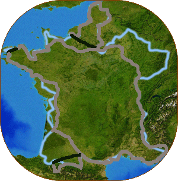

單車遊記、自助旅行和閒聊夢想
這文章寫在2016年5月，單車環法則是發生在2005年7~9月。
單車環法是我幹過的蠢事之中蠻有意義…
= 旅行記錄 =
旅行時間（含休息）天數 51 日日期 7.16~9.5
總累積騎乘距離
5349.01…
這次旅行是以一天花費40歐元為目標，約NT.1600元。每晚估計住宿費用為20歐元，扣除後則還有20…
《 環法60天預計路線圖 》

藍色線條是環法預定路線、灰色線條是已完成路線、黑色是搭火車路線
Giant FCR1
單車，環法的第二主角。93年7月份以NT.21,000購入。
Apple …
通宵沒睡，開始研究怎麼把整床滿滿的行李裝入包包裡。
05:00 行李大致打包完成，電器用品充電ing
一大早就頂著大太陽跑了好多個地方（汗）板橋監理站（設在中和的永和路，很麻煩找），繳NT.500罰單。
所有的政府部門中，最令我感到反感的就是交通部。尤以交通部底下的監理站更令人火大。
本來人好好的在宜蘭…
回宜蘭去了∼預計星期五才會回來打包行李。
我今天幹了些什麼...（回想中）早上整理了Comic Life的中文化，這套軟體打算用來寫漫畫式的…
人～要有夢想．心才不會老 要勇於實現夢想．你才會知道 其實自己好棒！